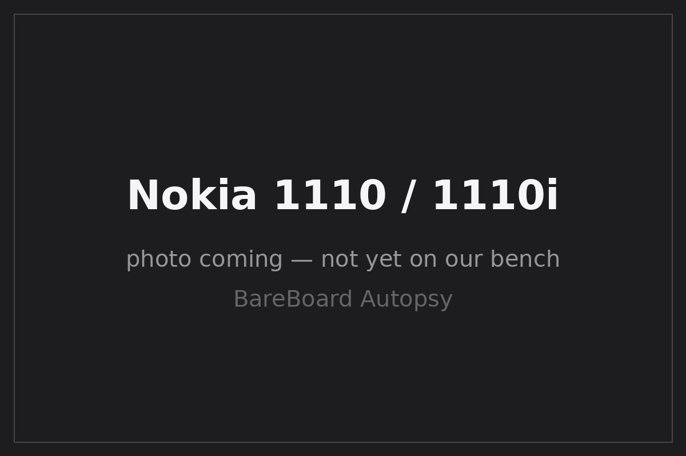

BareBoard Autopsy Report · Mobile Phones
Nokia 1110 / 1110i Confirmed
The Nokia 1100's successor and one of the best-selling phones ever made — with an actual FCC filing we can cite: QTLRH-69, granted to Nokia Corporation for the U.S. 1110b (RH-69) on September 21, 2005 FCC filing QTLRH-69. Everything below comes from that filing, public documentation, and encyclopedic records. We have never owned, opened, booted, probed, tested, or disassembled a Nokia 1110 or 1110i.

What is this thing?
The Nokia 1110 (and its near-identical sibling, the 1110i) is a dual-band GSM candybar announced in June 2005 and released that September as the direct successor to the Nokia 1100 Wikipedia. The global 1110/1110i use GSM 900/1800; the U.S. variant, the 1110b (RH-69), uses GSM 850/1900 Confirmed FCC filing QTLRH-69. Like the 1100, it was built for first-time buyers: monochrome 96×68 display, dust-resistant keymat, and a focus on talk time over features Wikipedia. Contemporary reporting credits the 1110 family with roughly 250 million units sold Likely Wikipedia.
The 1110i differs from the 1110 mainly in firmware-level details; publicly documented hardware architecture covers both under the same DCT4 platform Likely LPCWiki — Nokia 1110.
Timeline
- June 2005 — Nokia 1110 announced Wikipedia.
- September 2005 — Nokia 1110 released Wikipedia.
- 2005-09-21 — FCC grants QTLRH-69 to Nokia Corporation for the 1110b/RH-69 Confirmed FCC filing QTLRH-69.
- 2006 — 1110i variant released Wikipedia.
- 2026-09-27 — This report published from public records; no unit on our bench.
Outside
B Two softkeys + Navi-key cluster
C One-piece dust-resistant keymat
D Xpress-on swappable covers Wikipedia
E Removable rear cover; BL-5C battery underneath Wikipedia
Approximately 104 × 44 × 17 mm at 80 g Wikipedia. The 1110 dropped the 1100's flashlight but added an inverted-color display and a speaking clock/alarm — small upgrades on the same ultrabasic formula Likely Wikipedia.
Board
Public architecture: a DCT4-generation design around the UPP4M baseband processor (ARM7TDMI core), with 4 MB of NOR flash and 2 MB of PSRAM Likely LPCWiki — Nokia 1110. Nokia serviced this generation through the Easy Flash connector family — a documented service/flashing interface LPCWiki — Nokia Easy Flash.
Chips
| Ref | Marking / identity | Role | Confidence | Dig deeper |
|---|---|---|---|---|
| — | UPP4M (ARM7TDMI) | Baseband processor: GSM stack, UI, peripherals | Likely | LPCWiki — Nokia 1110 — no public datasheet located |
| — | 4 MB NOR flash | Firmware storage | Likely | LPCWiki — Nokia 1110; die-level identity awaits the bench — no public datasheet claimed |
| — | 2 MB PSRAM | Working memory | Likely | LPCWiki — Nokia 1110; packaging unknown — no public datasheet claimed |
| — | UEM-class power ASIC | Power management, charging, audio (DCT4 standard block) | Likely | Platform-standard per DCT4 service documentation; exact marking awaits the bench — no public datasheet claimed |
FCC
FCC ID QTLRH-69 — granted to Nokia Corporation on September 21, 2005 Confirmed FCC filing QTLRH-69 (PDF). The grant covers the 1110b (type RH-69), the U.S. dual-band GSM 850/1900 variant Confirmed FCC filing QTLRH-69 (PDF). Note the scope: this filing names the RH-69 specifically. We do not extend its test data or label photos to the global 900/1800 1110 or the 1110i without separate evidence.
Debug / service modes
Nokia's Easy Flash connector family provided the factory flashing and diagnostic path for DCT4 devices including the 1110 LPCWiki — Nokia Easy Flash. We describe this only at the documented high level: a service connector for authorized flashing and diagnostics. We have never connected to one, we publish no pinout, no baud rate, no procedure, no security codes, and no instructions for defeating any lock or protection. We listen; we don't knock.
Public findings & what we didn't do
- ✅ Cited the primary FCC grant (QTLRH-69, 2005-09-21) and scoped it to the 1110b/RH-69 FCC filing.
- ✅ Assembled the public architecture (DCT4 / UPP4M / 4 MB NOR / 2 MB PSRAM) LPCWiki.
- ✅ Kept the global 1110/1110i separate from the FCC-covered U.S. variant.
- ❌ We have not opened, booted, probed, or photographed a Nokia 1110/1110i ourselves.
- ❌ We have not verified the NOR flash die, RF markings, or PCB revision.
- ❌ We have not tested the Easy Flash interface or captured any boot log.
By the numbers
| Metric | Value | Source |
|---|---|---|
| Units sold (reported) | ≈ 250 million | Likely Wikipedia |
| Display | Monochrome, 96×68 px | Wikipedia |
| Network | GSM 900/1800 (global); GSM 850/1900 (1110b/RH-69) | Confirmed for RH-69 FCC filing |
| Weight / size | 80 g; 104 × 44 × 17 mm | Wikipedia |
| Memory | 4 MB NOR flash; 2 MB PSRAM | Likely LPCWiki |
| Platform | DCT4; UPP4M (ARM7TDMI) | Likely LPCWiki |
Glossary
| DCT4 | Nokia's fourth-generation digital core technology platform for GSM handsets. |
| UPP4M | A later UPP baseband variant (ARM7TDMI) used in mid-2000s DCT4 phones. |
| NOR flash | Flash memory that supports execute-in-place; used here for firmware. |
| PSRAM | Pseudo-static RAM — DRAM with an SRAM-like interface, used as working memory. |
| Easy Flash | Nokia's documented service connector family for flashing and diagnostics on DCT4/BB5 devices. |
| RH-69 | Nokia type designation for the U.S. 1110b. |
Sources & confidence
- FCC filing QTLRH-69 (PDF) — grant to Nokia Corporation, 2005-09-21, covering the 1110b/RH-69 (primary evidence).
- LPCWiki — Nokia 1110 — architecture: UPP4M, 4 MB NOR, 2 MB PSRAM (community documentation).
- LPCWiki — Nokia Easy Flash — service interface family (community documentation).
- Nokia 1110 — Wikipedia — dates, variants, specs, sales figure (secondary).
| Claim | Confidence | Basis |
|---|---|---|
| FCC ID QTLRH-69; grantee Nokia Corporation; grant date 2005-09-21; covers 1110b/RH-69 | Confirmed | FCC filing (primary evidence) |
| DCT4 / UPP4M / 4 MB NOR / 2 MB PSRAM | Likely | Corroborated community documentation; die-level detail unverified |
| Dates, specs, 250M-unit figure | Likely | Corroborated secondary records |
| Board-level component identities | Unknown | Awaits the bench |
Legal note
This report is a transformative educational summary of publicly available records. Product names and marks belong to their owners. We describe only publicly documented service interfaces at a high level; we publish no lock-bypass, authentication-defeat, firmware-extraction, or unsafe service procedures — including no security codes. Our posture: we listen, we don't knock.
Related reports
- Nokia 1100 — the 1110's DCT4 predecessor
- Nokia 1200 — the later ultrabasic DCT4 descendant
- Nokia 3210 — the DCT3 classic